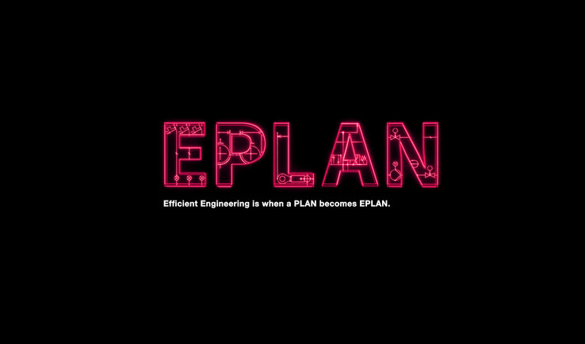

Hálózatok tervezése
Ez a kurzus a hálózatok tervezésének alapjait tartalmazza.
Tematika
- A műszaki tervezés célja
- A tervezői tevékenység jellege
- A villamos tervezés szakterületei
- Szabványok ismerete, alkalmazásuk
- Jogszabályok ismerete, alkalmazásuk
- Tervezést megelőző állapotok kérdése,
szerződésben rögzített feladatok
- Tervezői etika, felelősség, titoktartás,
adatok tárolása
- Tervezési munka előkészítése
- A villamos tervező szerepe a tervezésben
- A kiviteli tervek tartalmi követelményei,
jellemző
- Tervezői nyilatkozatok, felelősség